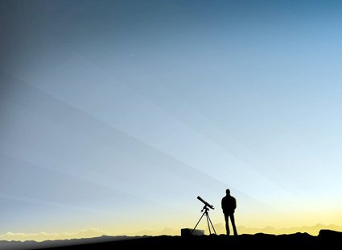
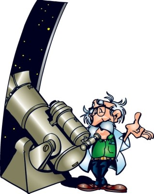
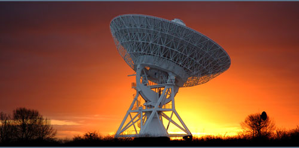

|
| |
|

Помните, как в детстве каждый мечтал посмотреть через телескоп на звезды, увидеть лунные моря, далекие планеты. Человек растет, а мечты остаются. Сейчас каждый может иметь это чудо-приспособление у себя дома, наблюдать за метеоритами и кометами. Благодаря новым технологиям область применения телескопа заметно расширилась, появилась возможность делать четкие космические снимки на расстоянии более двух миллионов световых лет! Рано или поздно перед любителем астрономии встает непростой вопрос: "Какой купить телескоп?" Возможно, это самое главное решение, которое будет влиять на дальнейшую судьбу вашего увлечения. Сделаете правильный выбор - и телескоп будет доставлять вам удовольствие от исследования звездного неба. Ошибетесь - и телескоп станет причиной разочарования, которое приведет к появлению объявления "продаю телескоп, новый, почти не использовался". Если вы уже положились на случай и купили телескоп, который теперь гордо занимает свое место в гараже или чулане, то это неплохо. Каким бы телескоп ни был - вы сможете найти ему хорошее применение. В конечном итоге, плодотворность увлечения астрономией определяет не сам телескоп, сколько ваш внутренний настрой: увлеченность, упорство, стремление к приобретению знаний. Тем, кто еще не определился, какой купить телескоп, мы поможем сделать этот выбор. Как правильно выбрать телескоп? В первую очередь выбор зависит от ваших жизненных условий и наблюдательных предпочтений. Сам телескоп здесь не причем! Если вы живете на 5-м этаже городской квартиры и любите наблюдать Луну и планеты, то вам нужен один телескоп. Если же вы живете в сельской местности и ваши любимые астрономические объекты - галактики, то вам нужен совершенно другой телескоп. Важную роль играют и другие обстоятельства: сумма, которую вы готовы истратить; вес, который вы сможете поднять и перетаскивать; ваш опыт астрономических наблюдений невооруженным глазом и с помощью бинокля. Главная характеристика телескопа - это его апертура. Так называют диаметр объектива или главного зеркала телескопа. Величина апертуры определяет яркость и четкость всего, что вы сможете увидеть в телескоп. Телескоп с 70-мм апертурой ни при каких условиях не покажет вам такие слабые звезды или объекты дальнего космоса, какие вы сможете увидеть с помощью хорошего 150-мм телескопа. В свою очередь, 150-мм телескоп никогда не достигнет в этом отношении 250-мм. Когда решите купить телескоп, не следует придавать большого значения увеличению. Увеличение телескопа зависит от используемого окуляра - небольшого съемного линзового устройства, в которое наблюдается объект. Производитель, как правило, комплектует телескоп парой окуляров, дающих разное увеличение. Кроме того, их всегда можно купить дополнительно. Нужно только иметь в виду бесполезность использования большого увеличения на телескопе с малой апертурой. Вы ничего не сможете увидеть кроме нечеткого, расплывчатого пятна. Только телескоп с большой апертурой, установленный на хорошей монтировке, способен дать изображение хорошего качества при кратности увеличения от 250х и выше. В любом случае вы будете чаще использовать меньшие увеличения, поскольку с ними легче работать, и они дают более качественные изображения при наблюдениях в телескоп. Эмпирическое правило говорит, что максимально полезное увеличение телескопа составляет примерно 20 крат на один сантиметр апертуры. Значит 15-см телескоп имеет полезное увеличение в 300 крат, а в реальности даже меньше. Держитесь подальше от телескопа, если вам нахваливают его увеличение. Если вы увидите в магазине 60-мм телескоп, в паспорте или рекламе которого указывается увеличение 500 крат, то знайте, что производитель полагает, что вы легковерный и несведущий покупатель. А раз так, то это значит, что он скрывает от вас истинное качество инструмента. Теперь, когда вы знаете, что главное, покупая телескоп, - это его Апертура,вы можете решить, что выбрать телескоп легко: надо брать инструмент с максимально возможной (исходя из финансовых соображений) апертурой. Однако на практике дело обстоит не так просто. Если телескоп окажется слишком тяжелым для переноски его к месту наблюдения и обратно, а его сборка и установка будет занимать много времени, то вы будете редко им пользоваться. Кроме того, телескопы с одинаковой апертурой имеют и другие отличия: некоторые из них являются более портативными, другие дают более качественное изображение, третьи - более дешевые. Все это необходимо учитывать для принятия правильного решения. В этом вам помогут приводимые ниже рекомендации. |